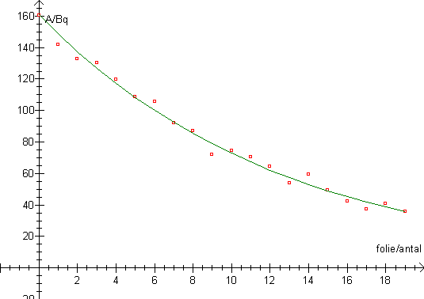
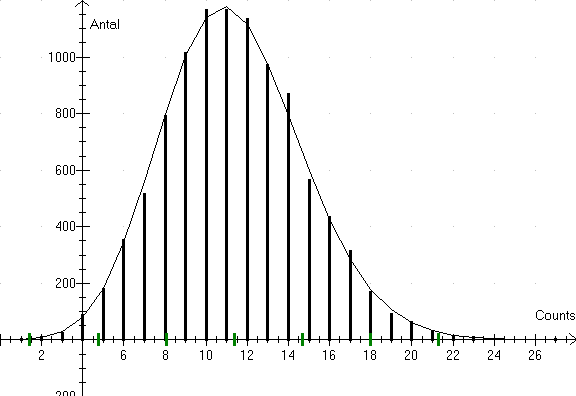
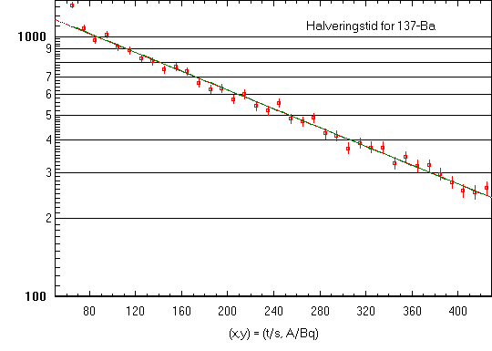
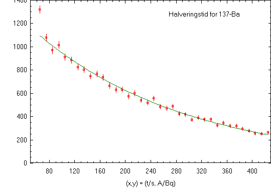

Forsøg med halveringstykkelse af b-stråling i foliebakker. I laboratoriet har vi nogle aluminiumsplader, men de er lidt tykke, så derfor har jeg forsøgt med med at klippe et par foliebakker i plader. Med til øvelsen kan så høre en bestemmelse af folietykkelsen og af hvad foliet er lavet af.

Når målingerne er foretaget i Datalyse, vælges logaritmisk 2.aksen og dernæst lineær regression. Ved beregning af den bedste rette linie, kan man vælge at få indsat forskriften for funktionen f(t). Denne er indtegnet ovenfor, idet der atter er valgt almindelige akser.
Nogle forsøg med radioaktivitet kan være kedelige. Ovenstående forsøg er hurtigt lavet, 20 målinger á 20 sekunder. Prøv også at måle poissonspredning.

Det er interessant at se målinger løbe ind på skærmen. Og der kan regnes på det bagefter.
Forsøg med minigenerator kan give følgende grafer: Først vælges logaritmisk 2.akse med lineær regression og afmærkning af spredning, ±rod(N).

Så indsat funktion f(t):

Forskriften for funktion, halveringstid med mere kan aflæses i memoen i Datalyse.